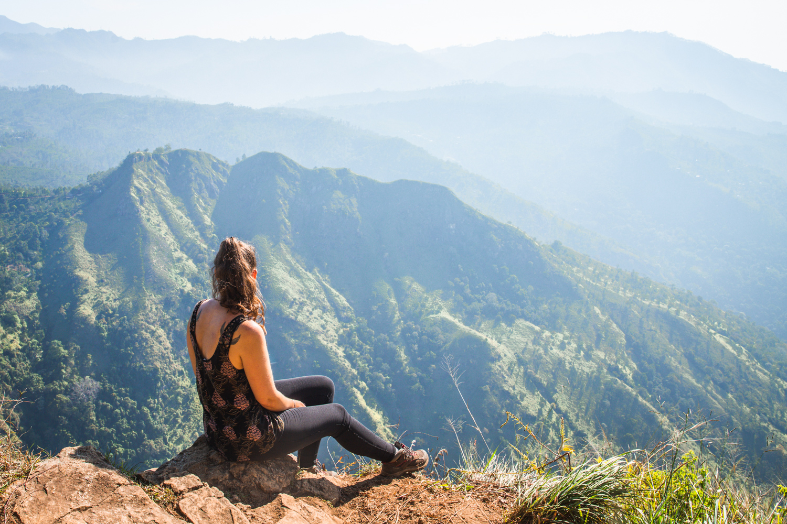
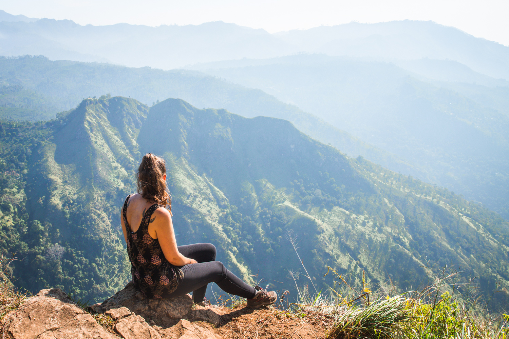
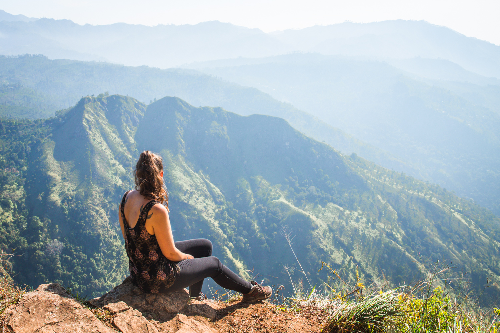

Ella is a small town in the Badulla District of the Uva Province in Sri Lanka. It's a popular destination for both
local and international tourists, known for its breathtaking landscapes, cool climate, and laid-back atmosphere. Nestled in
the central highlands, Ella is surrounded by lush greenery, tea plantations, and rolling hills, making it an ideal spot
for nature lovers and those seeking tranquility.
Climate
Ella enjoys a cooler climate compared to the lowlands of Sri Lanka, with temperatures often ranging between 20°C to
28°C. This makes it a pleasant retreat from the heat, especially during the dry season.
How to get Ella
Ella is accessible by train, which is one of the most scenic train journeys in the world. The train ride from Kandy to
Ella (or vice versa) passes through beautiful landscapes, including tea plantations, forests, and misty mountains. Buses
and private vehicles are also common ways to reach Ella.
Attractions areas in Ella
Ella Rock
A popular hiking destination, Ella Rock offers stunning panoramic views of the surrounding valleys and hills.
The hike to the top is challenging but rewarding, and it’s a must-do for those visiting Ella.

Nine Arch Bridge
This iconic bridge, also known as the "Bridge in the Sky," is a marvel of colonial-era engineering.
It's a popular spot for photography, especially when a train passes over the bridge. The surrounding area is also picturesque,
with tea fields and dense forest.
Ravana Falls
A beautiful waterfall located about 6 km from Ella, Ravana Falls is one of the widest waterfalls in Sri Lanka. It’s a
great spot for a quick dip or to relax by the cascading waters.
Dhowa Rock Temple
An ancient Buddhist temple located a short distance from Ella, Dhowa Rock Temple is known for its large unfinished
Buddha statue carved into the rock face.
Accommodation
Ella offers a range of accommodation options, from budget guesthouses to boutique hotels with stunning views. Many of
the places to stay are set on hillsides, offering beautiful vistas right from your room.
Ella is a perfect blend of adventure, relaxation, and natural beauty, making it a must-visit destination in Sri
Lanka.
Whether you're into hiking, photography, or just soaking in the peaceful surroundings, Ella has something for
everyone.

 
